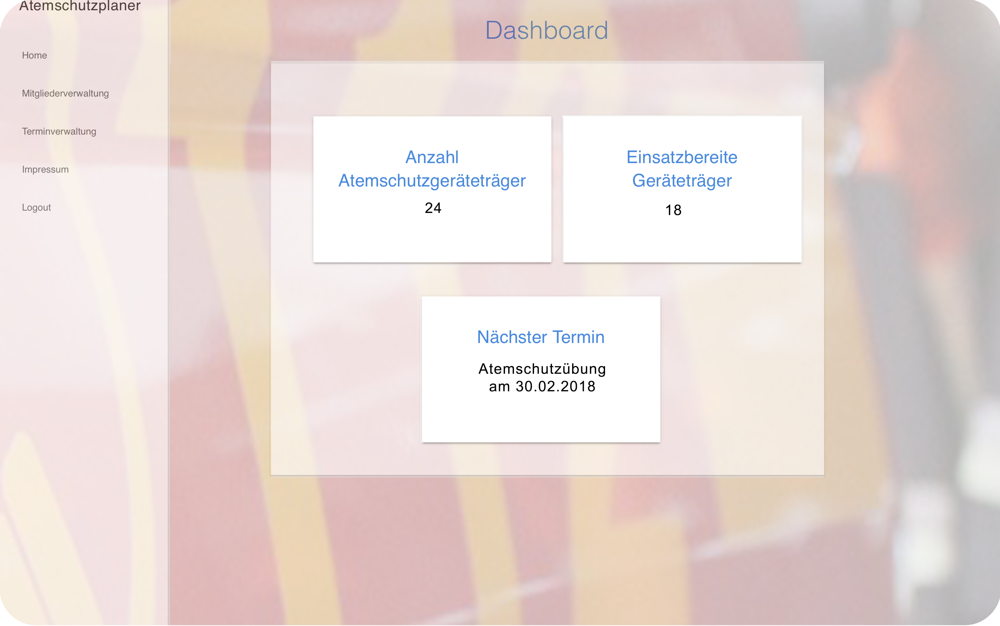

Atemschutzplaner
Allgmeines
Installation und Konfiguration
Technischer Aufbau
Anleitung
Haddock
Zurück zur Anwendung
Allgemeines
Zweck der Anwendung
Das Program Atemschutzplaner soll die Verwaltung und Dokumentation von Daten, welche im Atemschutzbetrieb in freiwilligen Feuerwehren auftreten erleichtern. Dafür wird eine Weboberfläche bereit gestellt, welche es erlaubt registrierten Benutzern Aktivitäten, wie Übungen, Termine in Atemschutzübungsanlagen, ärztliche Untersuchungen oder Einsätze anzulegen. Zudem bietet die Software eine Mitgliederverwaltung, welche es ermöglicht die zuvor angelegen Aktivitäten einzelnen Atemschutzgeräteträgern zuzuweisen, außerdem wird eine Prüfung durchgeführt, ob alle Geräteträger die verpflichtenden Termine wahrgenommen haben.
